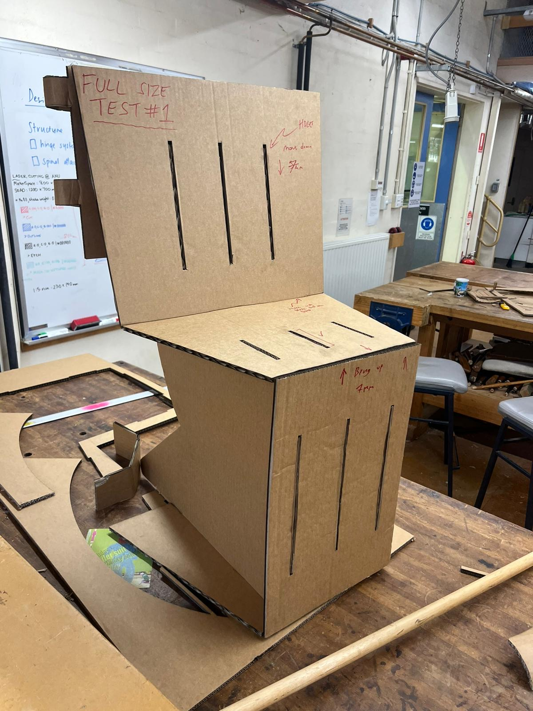
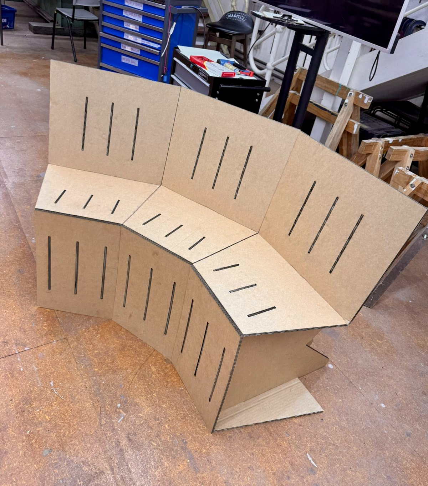
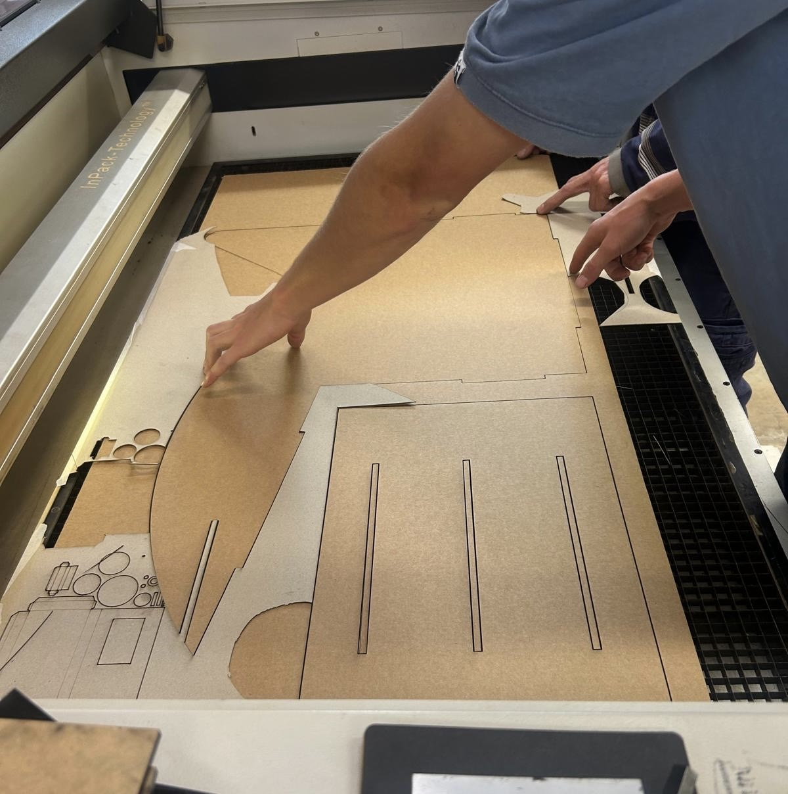

Cardboard Chair.
Semester 1, 2026.
This was an especially challenging assessment item from Mediating Spaces Through Object Design: Supporting Bodies. I was tasked with designing and constructing five functional chairs made completely with cardboard, without the use of glue or tape. There was a hard limit of 20 cardboard sheets that further constricted design freedom.
My response was a system of interlocking chairs that were laser cut and assembled with seven components. The chair was capable of supporting five adults with minimal stress.



Cardboard Chairs. Cardboard.